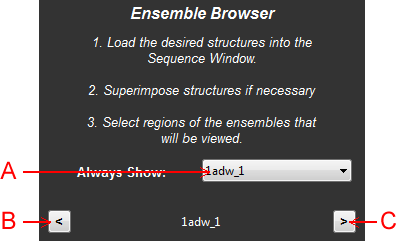

Abstract: The ensemble browser is designed to be a useful tool to easily flip through corresponding regions of an ensemble of structures. In order to use it effectively, first superimpose the structures. Then view and select a region of the ensemble that you want to investigate. Using the forward and backward arrow you can easily flip through the selected atoms on each template.

Figure 1: Schematic of the ensemble browser panel
A: Always Show Menu - The indicated model will always be displayed in the ensemble as a semi-transparent structure.
B: Previous Template - Flip to the previous template in the list of loaded structures.
C: Next Template - Flip to the next template in the list of loaded structures.